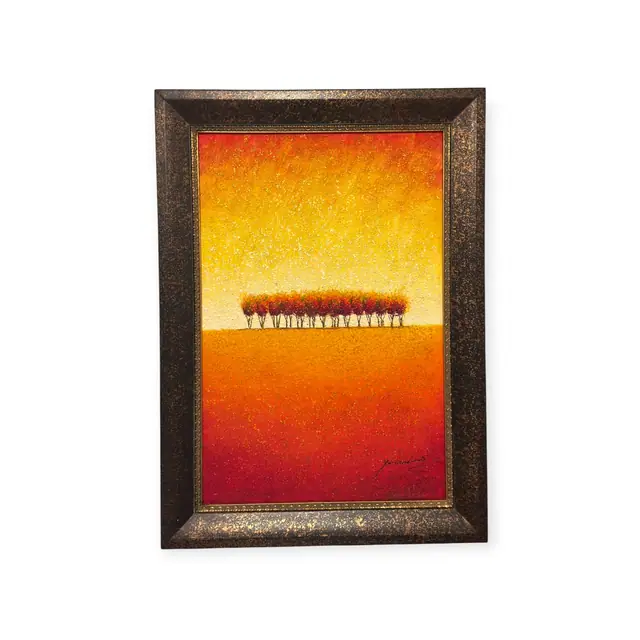
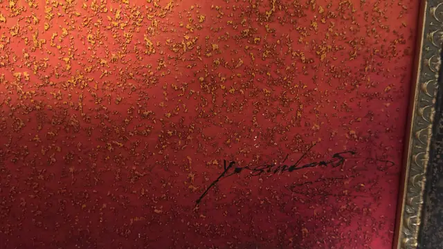
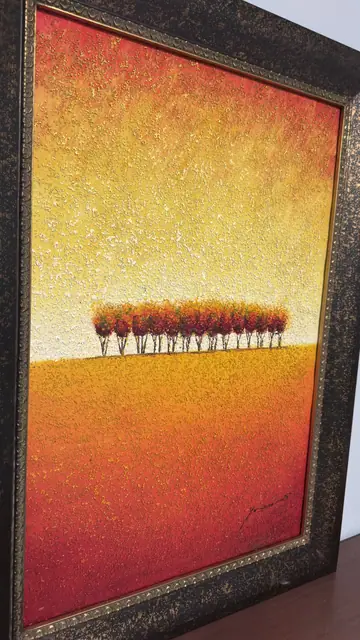
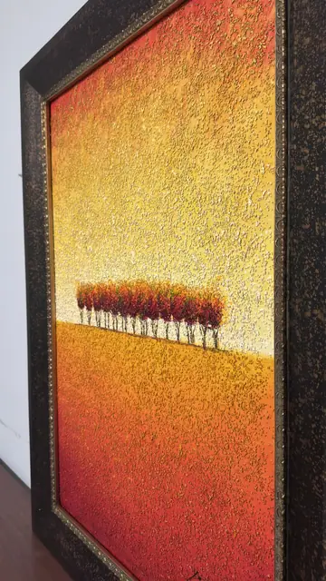

Paintings & Prints
Row of Autumn Trees on a Golden Horizon, Signed, Framed
· late 20th / early 21st century
Price Upon Request




About the Item
A minimal, almost abstract landscape: a thin band of squat trees with rust-red canopies and pale trunks runs across the centre of the panel, dividing a deep crimson upper field from a glowing amber lower one. The colour is laid as a smooth vertical gradient from carmine through orange to pale gold, then broken all over by a dense scatter of raised gold and cream flecks that read as texture rather than as depicted objects. The effect is contemplative and poster-like, with no horizon detail beyond the trees themselves. Medium: oil on canvas with textured/gilded surface treatment. Signed lower right of the canvas. Condition: No visible damage; surface texture and gilding intact. Frame has an intentionally distressed speckled finish that should not be mistaken for wear.
Details
- Creation Year:
- late 20th / early 21st century
- Dimensions:
- Height: 43.2 in (109.73 cm)
Width: 31.0 in (78.74 cm)
outside of frame - Medium:
- oil on canvas with textured/gilded surface treatment
- Period:
- 21St
- Condition:
- Offered in the condition shown in the photographs.
- Reference Number:
- VO-159
- Documentation:
- no certificate or label photographed